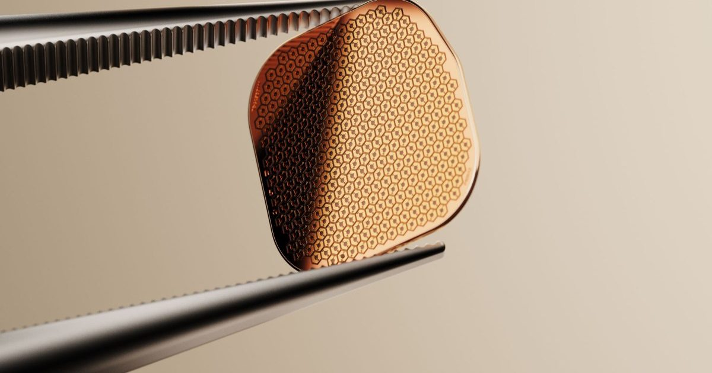

Этот имплантат может восстановить зрение у пациентов с макулярной дегенерацией
Возрастная макулярная дегенерация (ВМД) затрагивает более 5 миллионов человек во всем мире.
И до сих пор никакое лечение не могло восстановить их зрение.
Система Prima, которая была одобрена в Европе в июле и ожидает одобрения FDA в США, меняет это.
Он сочетает в себе имплантат сетчатки с очками,оборудованными камерой, для улучшения зрения у пациентов...